Activité : Entraînement d'une IA de classification d'images
Cette activité permet de découvrir comment une IA est entraînée et pourquoi choisir les bonnes données
est important. Elle est très guidée et permet de voir comment les données influencent l'apprentissage
d'une IA.
- Aller sur le site : https://pixees.fr/classcodeiai/app/tuto1/
- Aller dans la partie « Expérimenter »
- Suivez les différentes étapes. Si un intervenant vous fait faire l'activité, vous pouvez passer les
vidéos, car les explications seront données à l'oral.
Activité : Utilisation d'une IA
Dans cette activité, vous allez découvrir un cas pratique : créer un programme qui utilise les
prédictions d'une IA de Computer Vision pour modifier un affichage.
Partie Modèle IA
La partie "Données" permet d'utiliser des images pour entraîner votre IA.
Pour cela : ajouter des catégories et leur affecter des images dans la partie « Données ».
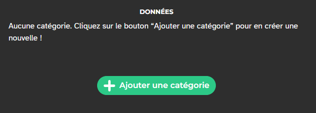
Une fois la catégorie créée, renommer la catégorie via le crayon. Il y a trois façons d'ajouter des
images :
- Utiliser la caméra et faire des photos (icone d ecaméra)
- Utiliser les catégories existantes (icone de 6 carrés)
- Téléverser des images (icone de téléchargement)
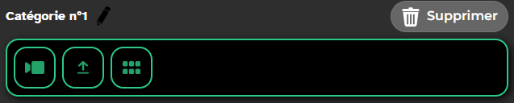
Lorsque toutes les catégories sont prêtes, cliquer sur « Entraîner le modèle » dans la partie
Entrainement du site web.
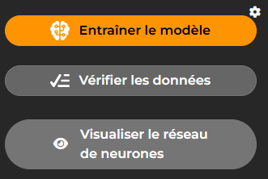
Dans la partie « Aperçu », vous pouvez tester le modèle en ajoutant des images commelors de la création
des catégories.
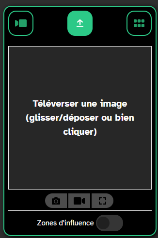
Après téléversement d'une image, les prédictions s'affichent.
Vous pouvez visualiser comment la prédiction a été faite en cliquant sur le bouton « Visualiser le
réseau de neurones » qui se trouve dans la partie Entrainement de la page Web.
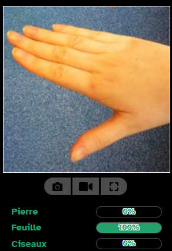
Une fois que votre modèle d'IA vous convient, vous pouvez passer à la partie programmation en cliquant
sur le bouton AdaCraft.
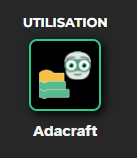
Partie Programmation
La partie la plus utilisée de cette page web est la partie blocs. A la gauche de la page se trouve les
différents blocs qui peuvent être utilisé pour programmer ainsi que leur catégorie. Au milieu se trouve
votre environnement de travail : c'est ici que vous allez assembler les blocs pour faire un code
fonctionnel.
Les deux instructions les plus importantes sont :
- « sélectionner et initialiser le modèle de la mémoire locale du navigateur »
- « lancer la détection de la caméra » (ou « lancer la détection sur fichier/URL » si vous n'avez pas
de caméra.)
Ce sont ces deux instructions qui permettent d'utiliser le modèle d'IA précédemment entrainé.
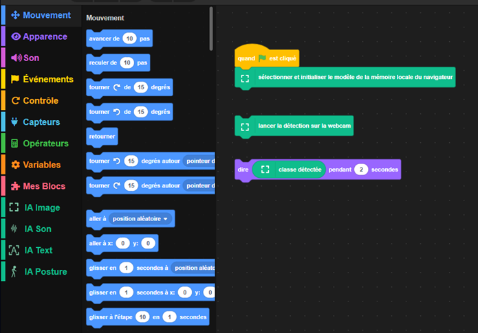
En haut à droite de la page web se trouve le résultat de votre code. En effet, c'est ici que vous pouvez
retrouver les « objets » qui vont réagir en fonction du code.
L'icone de drapeau vert permet de lancer le code.
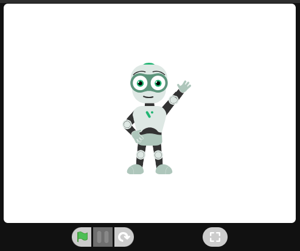
En bas à droite de la page web, vous pouvez modifier l'arrière-plan ainsi que choisir quels objets vont
être afficher. C'est aussi en sélectionnant les objets que l'on peut choisir quel code affecte ces
objets.
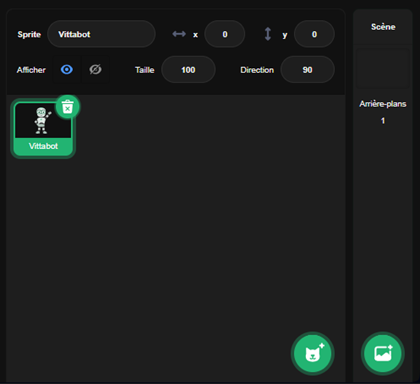
Tout en haut à droite, vous pouvez appuyer sur la note de musique pour rajouter des sons, sur le pinceau
pour pouvoir modifier les objets et changer leur apparence, et le "
< />" pour revenir sur la partie
code.
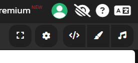
Exemples de programmes
Maintenant que les fonctionnalités principales du site sont expliquées, c'est à vous de faire votre
propre projet!
Si vous avez des idées en tête, vous pouvez les réaliser, et si vous n'en avez pas, voici quelques
exemples de programmes qui peuvent être réalisés./p>
- Tri des poubelles : trois poubelles sont affichées, en fonction de la photo donnée,
un objet glisse vers la bonne poubelle.
- Voiture autonome : la voiture tourne et avance selon les panneaux détectés.
- Météo : affichage météo selon l'image détectée (soleil, pluie, etc.).
- Shifumi : Comparer le signe de mains fait avec une variable aléatoire, gérer toute
les comparaisons.
KAGGLE NOTEBOOKS
Au cours de cette activité, vous allez programmer votre propre IA de classification d'images de chats et de chiens.
Pour cela, vous allez avoir besoin vous créer un compte Kaggle Notebook (société acquise par Google).
Cela vous permettra d'entraîner votre IA en quelques minutes au lieu de plusieurs heures.
En arrivant sur le site après avoir créé votre compte, https://www.kaggle.com/code , vous
allez retrouver ceci :
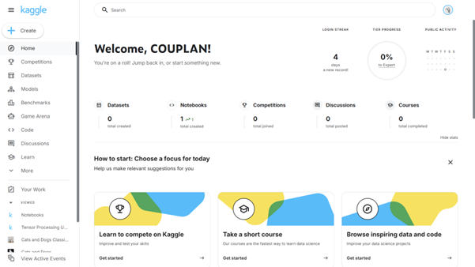
On peut y voir plusieurs choses. Le panneau déroulant à gauche, où vous pouvez retrouver à la fin tous
les travaux que vous avez fait dans l'espace “Your Work”. Et l'espace central, qui montre vos
statistiques. En haut de cet espace central vous avez une barre de recherche.
Cliquez dessus et tapez : “ACTIVITE IA LYCEE”.
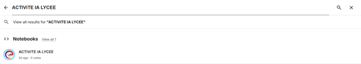
Si vous en voyez plusieurs, sélectionnez celle en majuscule et qui ne comporte aucun chiffre avec la
photo de profil du logo de l'ESEO.
Cela va vous amener sur cette page :
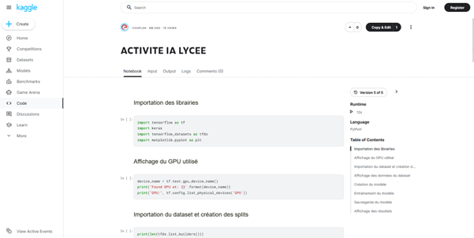
C'est le travail de l'activité. Vous allez ensuite cliquer sur “Copy and Edit” en haut à droite. Cela va
copier et créer cette activité dans votre espace personnel pour vous permettre de la modifier. Vous
allez la retrouver dans l'espace “Your Work”. Vous allez donc arriver sur cette page :
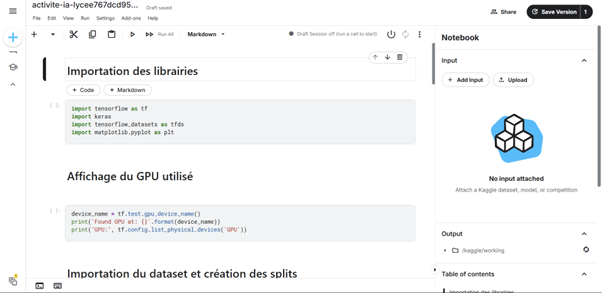
C'est l'espace de programmation. Il est divisé en plusieurs parties. Le panneau déroulant à gauche,
toujours le même, l'espace central dédié au code et juste au-dessus, les onglets de navigation pour
paramétrer cet espace. A droite se trouve un panneau déroulant. Dans ce panneau nous utiliserons la
Table des matières pour naviguer plus facilement.
Vous y trouverez aussi “Session options”.
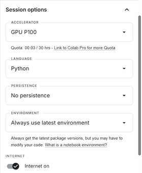
Vous allez configurer les paramètres de la session comme sur l'image sur la gauche si ce n'est pas déjà
fait (n'oubliez pas d'activer internet)
Pour lancer la session de programmation, vous allez cliquer sur le bouton on/off en haut à droite de la
page :
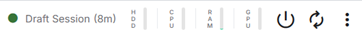
Votre Session est prête à l'emploi, vous allez pouvoir démarrer l'activité !
UTILISATION D'UN NOTEBOOK
Un notebook est un environnement de travail spécifique et modulable. Ce n'est pas comme un environnement
classique où vous tapez votre code dans un gros paragraphe. Ici, vous pouvez segmenter votre code. Le
code de l'activité est par exemple segmenté en 8 parties. Les parties vont être représentées par des
blocs, que vous pouvez créer, supprimer ou modifier. Pour cette activité il n'y aura besoin ni de créer
ni de supprimer des blocs.
Il y a deux types de blocs. Les blocs de texte, pour par exemple mettre des annotations comme des titres
ou des explications, et des blocs de code. Les boutons + code et + markdown servent à ajouter une
cellule de texte ou de code après la cellule sélectionnée (on ne va pas les utiliser)
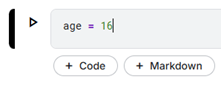
Comment ça marche concrètement ?
1. Lancer une cellule de code
- Cliquez dedans, votre curseur de souris s'affiche pour écrire
- Appuiez sur les touches Shift + Entrée (ou cliquez sur le bouton ▶ en haut)
→ Le code s'exécute et le résultat s'affiche juste en dessous.
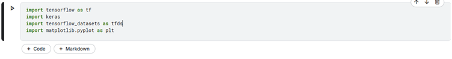
2. Dans quel ordre faut-il exécuter les cellules ?
Très important : l'ordre dans lequel les cellules sont exécutées compte énormément !
Le notebook garde en mémoire tout ce qui a exécuté avant, dans l'ordre où ça a été exécuté (pas
forcément l'ordre où cela apparait dans le fichier).
Exemple simple :
- Cellule 1 : age = 16
- Cellule 2 : print(age + 5)
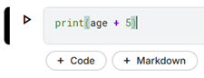
Si vous exécutez d'abord la cellule 2 sans avoir exécuté la cellule 1 → erreur ! La variable age n'existe
pas encore.
Donc la règle d'or : on exécute les cellules de haut en bas (comme quand on lit un livre de gauche à
droite).
3. Que se passe-t-il si je modifie une cellule déjà exécutée ?
Si vous changez le code dans une cellule, il faut relancer cette cellule (Shift + Entrée) et souvent, il
faut aussi relancer toutes les cellules qui dépendent d'elle (celles qui sont en dessous et qui
utilisent les variables ou fonctions modifiées).
EXPLICATION DU CODE
Dans le code, chaque partie est précédée d'un titre.
Il y a au total 8 parties.
1. LES LIBRAIRIES
La première est comme son nom l'indique, là où les librairies sont importées. Vous pouvez en rajouter au
besoin. La première fois que vous allez lancer la cellule elle peut afficher des erreurs.
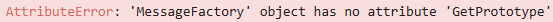
Il suffit d'attendre la fin de son exécution et de la relancer, cela devrait les corriger.
2. LE GPU
La seconde partie concerne la partie GPU. Elle ne permet pas son utilisation, ceci est fait dans les
paramètres, mais c'est une vérification pour constater qu'un GPU est bien utilisé.
Si vous avez ce résultat :
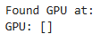
Cela veut dire qu'il ne trouve pas le GPU, vous devez donc vérifier que vous avez sélectionné ACCELERATOR
: GPU P100 dans les paramètres de session cités plus haut dans la section “KAGGLE NOTEBOOKS” de cette
activité.
Sinon vous devriez obtenir ceci ou équivalent :
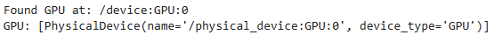
3. LE DATASET
La troisième partie est importante. C'est ici que nous allons importer notre set de donnée qui va servir
à entraîner l'IA.
La fonction tfds.load() va nous permettre d'importer un dataset fourni par la bibliothèque
tensorflow_datasets. La fonction preprocess() va nous permettre de mettre les images contenues dans ce
dataset à la bonne taille.
Cette cellule peut prendre du temps à s'executer. Veillez néanmoins à bien activer internet dans vos
paramètres de session (voir plus haut) au risque de ne pas pouvoir importer le dataset.
4. DONNEES DU DATASET
Ceci va servir à afficher les informations du dataset pour les plus curieux d'entre vous.
5. LE MODELE D'IA
Venons-en maintenant à la partie la plus intéressante, celle où vous allez créer votre propre modèle.
Cela est possible grâce à la fonction Sequential() de la bibliothèque keras. Il est important de noter
que dans cette partie, chaque ligne de code est une couche.
Ici, le modèle servira à analyser et classer des images. Vous pouvez observer 4 paragraphes dans la
fonction Sequential(). Ces 4 paragraphes donc vous le représenter en 4 portions schématisées ci-dessous.
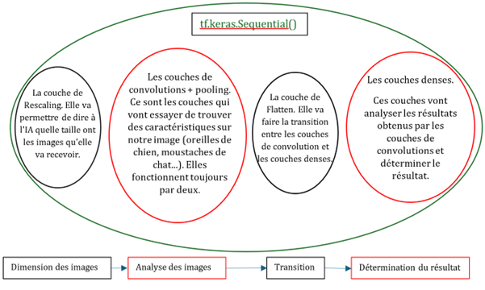
1.
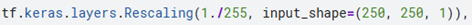
La couche de Rescaling. Vous n'allez pas y toucher.
2. Les couches de convolution + pooling.
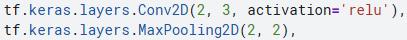
Ceci est un groupe de deux couches. La première, la layers.Con2D(), est la couche de convolution, la
seconde, la layers.MaxPooling2D() permet d'avoir de meilleurs résultats. Elles fonctionnent toujours par
deux. Pour améliorer votre modèle, vous pouvez lui ajouter une ou plusieurs couches de convolution +
pooling et/ou augmenter le nombre de neurone par couche. Attention, seules les couches de concolutions
possèdent des neurones. Vous
pouvez les modifier en modifiant ce paramètre :
tf.keras.layers.Con2D(NOMBRE DE NEURONES, 3, activation='relu')
Vous remarquerez que le modèle présent dans l'activité possède déjà deux couches de convolution +
pooling.
ATTENTION ! Vous pouvez rencontrer certaines erreurs.
ERREUR 1 :
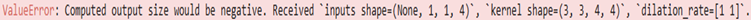
Dans ce cas vous avez dépassé le nombre de couche de convolution maximum, enlever une ou deux couches et
réessayer.
ERREUR 2 :
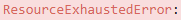
ou
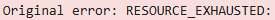
Ici c'est que vous utilisez trop de ressources. Il faut donc commencer par réduire le nombre de neurones
dans les couches de convolution. Redémarrez ensuite la session avec le bouton On/Off en haut. Si
l'erreur persiste, continuez de réduire le nombre de neurones par couches ou enlevez une couche de
neurones.
6. L'ENTRAINEMENT
C'est en lançant cette cellule que votre IA va apprendre et s'améliorer. Il va être au passage affiché
les résultats de votre IA après chaque epoch.
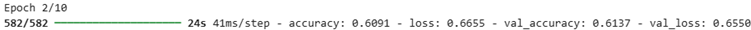
Par exemple en zoomant ici sur l'epoch numéro 2, il est affiché une barre de progression, et les
résultats de l'accuracy (nombre d'images correctement prédites en proportion) et la loss (erreur de l'IA
quant à ses prédictions). Le but étant d'avoir l'accuracy la plus haute avec la loss la plus basse
possible. Si vous pensez que votre modèle d'IA peut apprendre plus car il n'a pas encore fait de
surapprentissage, vous pouvez augmenter le nombre d'epoch.
7. SAUVEGARDE DE VOTRE MODELE
Dans cette partie vous allez pouvoir enregistrer votre IA. Vous trouverez plus d'explication dans la
section “ENREGISTRER SON IA” de l'activité.
8. AFFICHAGE DES RESULTATS
C'est ici que vous allez pouvoir analyser plus en détail les résultats de votre IA. Pour cela des graphes
vont s'afficher indiquant l'évolution des performances de votre IA au cours de son apprentissage. Vous
n'êtes cependant pas obligé de lancer cette cellule après chaque apprentissage de modèle car les
résultats sont déjà affichés pendant l'apprentissage. Ils sont juste plus détaillés et plus visuels ici.
ENREGISTRER SON IA
Si vous pensez que votre modèle d'IA est bon, vous pouvez l'enregistrer. Vous allez lancer la portion de
code “Sauvegarde du modèle”. Cela va créer un fichier .keras contenant votre IA. Ce fichier va
s'afficher dans le panneau déroulant de droite dans la section “Output”.
Vous pouvez en enregistrer plusieurs mais n'oubliez pas de changer le nom du fichier que vous
enregistrez pour ne pas écraser le précédent.
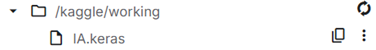
Attention, c'est normal si le fichier met du temps à s'afficher dans “Output”. Cliquez sur le bouton
refresh, il devrait apparaître. Vous pouvez ensuite le télécharger sur votre ordinateur en cliquant sur
les trois petits points puis sur “download”.
FIN DE L'ACTIVITE
A la fin de l'activité, vous allez envoyer à l'adresse mail mail.ia@eseo.fr votre fichier .keras qui
contient votre meilleure IA. Vous le nommerez :
IA_NOM_PRENOM.keras
Pour cela allez sur https://wetransfer.com/ . Vous allez trouver
cette fenêtre. Ajouter votre fichier
.keras. Entrez le mail du destinataire écrit plus haut, et votre mail de formation ESEO dans
l'expéditeur (type : formation1.ia@eseo.fr).
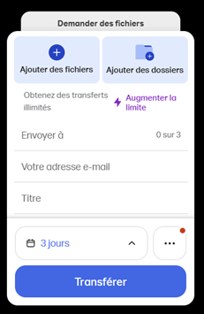
Vous pouvez aussi vous ajouter en tant que destinataire si vous voulez récupérer votre IA. Mettez le
Titre ”IA” dans ”Titre”. Vous pouvez ensuite envoyer le mail.
Félicitations ! Vous avez fini l'activité, on espère qu'elle vous aura plu. Vous pouvez toujours la
retrouver chez vous sur https://www.kaggle.com/code , elle est
ouverte au public et accessible par tous.
IMPORTANT
1) Le programme qui testera votre activité à la fin prendra en compte les IA qui analysent des images de
250x250 pixels. Veuillez ne pas changer ces deux champs au risque que l'IA ne fonctionne pas. Ils
sont respectivement dans les sections : “Importation du dataset et création des splits” et “Création du
modèle”.
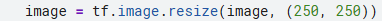
2) Vous devez toujours relancer la partie création du modèle avant de lancer l'entraînement de l'IA,
sinon cela continuera d'entraîner l'IA précédente sans en améliorer les performances, l'utilité est donc
limitée.